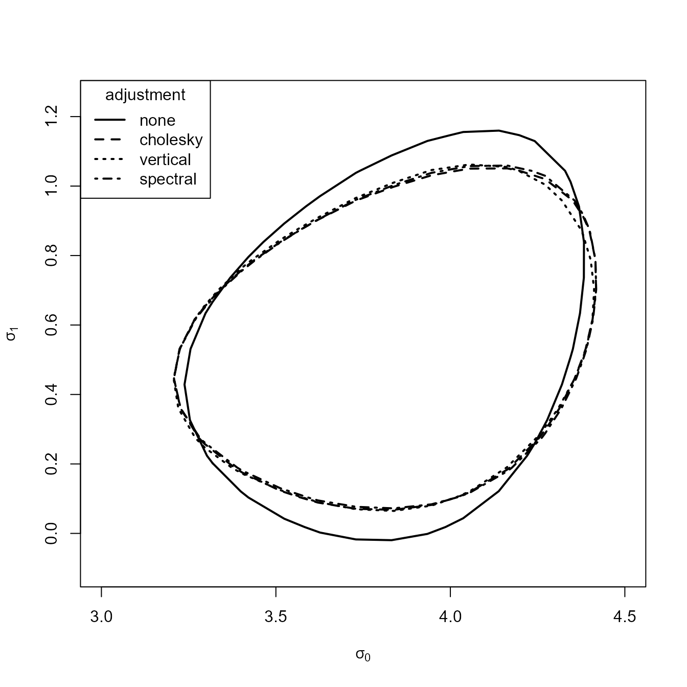

Introducing chandwich: Chandler-Bate Loglikelihood Adjustment
Paul Northrop and Richard Chandler
2019-11-09
Source:vignettes/chandwich-vignette.Rmd
chandwich-vignette.RmdThe chandwich package performs adjustments of an independence loglikelihood using a robust sandwich estimator of the parameter covariance matrix, based on the methodology in Chandler and Bate (2007). This can be used for cluster correlated data when interest lies in the parameter vector \(\theta\) of the marginal distributions or for performing inferences that are robust to certain types of model misspecification.
Suppose that we have \(k\) clusters of observations \(\{y_j, j = 1, \ldots, k\}\), where \(y_j\) is a vector of observations for the \(j\)th cluster. The independence loglikelihood function is given by
\[\ell_I(\theta) = \sum_{j=1}^{k} \ell_j(\theta; y_j),\] where \(\ell_j(\theta; y_j)\) is the contribution from the \(j\)th cluster. Suppose that the independence maximum likelihood estimator (MLE) \(\hat{\theta}\) is the unique root of \[\frac{\partial \ell_I(\theta)}{\partial \theta} = \sum_{j=1}^{k} \frac{\partial \ell_j(\theta; y_j)}{\partial \theta} = \sum_{j=1}^{k} U_j(\theta) = 0.\] The adjustments scale \(\ell_I(\theta)\) about \(\hat{\theta}\) so that the Hessian \(\hat{H}_A\) of the adjusted loglikelihood is consistent with the sandwich estimator (Davison 2003) of the covariance matrix of \(\hat{\theta}\). Specifically, \(\hat{H}_A^{-1} = -\hat{H}^{-1} \hat{V} \hat{H}^{-1},\) where \(\hat{H}\) is the Hessian of \(l_I(\theta)\) at \(\hat{\theta}\) and \(\hat{V} =\sum_{j=1}^{k} U_j(\hat{\theta}) U^{T}_j(\hat{\theta})\).
There are two types of adjustment. A horizontal adjustment \[\ell_A(\theta) = \ell_I(\hat{\theta} + C(\theta - \hat{\theta}))\] where the parameter scale is adjusted, and a vertical adjustment \[\ell_{A2}(\theta) = \ell_I(\hat{\theta}) + \{(\theta - \hat{\theta})^T \hat{H}_A (\theta - \hat{\theta})\} \frac{\ell_I(\theta) - \ell_I(\hat{\theta})}{(\theta - \hat{\theta})^T \hat{H}_I (\theta - \hat{\theta})},\] where the loglikelihood is scaled. The differences between these adjustments are discussed in Section 6 of Chandler and Bate (2007). The horizontal adjustment involves calculating matrix square roots of \(\hat{H}\) and \(\hat{H}_A\). Chandler and Bate (2007) consider two ways of doing this, one using Cholesky decomposition another using spectral decomposition.
Loglikelihood adjustment using the adjust_loglik function
The function adjust_loglik returns an object of class chandwich: a function that can be used to evaluate \(\ell_I(\theta)\), \(\ell_{A2}(\theta)\) and both choices of \(\ell_A(\theta)\). Functions that take a chandwich object as an argument have a vector argument type, equal to one of "vertical", "cholesky", "spectral", "none", to select the type of adjustment. The default is type = "vertical".
We illustrate the loglikelihood adjustments and the use of the functions in chandwich using some examples, starting with a simple model that has one parameter.
Binomial model
The rats data (Tarone 1982) contain information about an experiment in which, for each of 71 groups of rats, the total number of rats in the group and the numbers of rats who develop a tumor is recorded. We model these data using a binomial distribution, treating each groups of rats as a separate cluster. A Bayesian analysis of these data based on a hierarchical binomial-beta model is presented in Section 5.3 of Gelman et al. (2014).
The following code creates a function that returns a vector of the loglikelihood contributions from individual groups of rats, calls adjust_loglik to make the adjustments, produces a basic summary of the MLE and the unadjusted and adjusted standard errors and plots the adjusted and unadjusted loglikelihood. There is no need to supply the argument cluster in this example because the default, that each observation (group of rats) forms its own cluster applies here.
library(chandwich)
binom_loglik <- function(prob, data) {
if (prob < 0 || prob > 1) {
return(-Inf)
}
return(dbinom(data[, "y"], data[, "n"], prob, log = TRUE))
}
# Make the adjustments
rat_res <- adjust_loglik(loglik = binom_loglik, data = rats, par_names = "p")
summary(rat_res)
#> MLE SE adj. SE
#> p 0.1535 0.008645 0.01305
plot(rat_res, type = 1:4, legend_pos = "bottom", lwd = 2, col = 1:4)In the one-dimensional case the (horizontal) Cholesky and spectral adjustments are identical and, over the range in the plot, the vertical adjustment is very similar to the horizontal adjustments. Appreciable differences only becomes apparent towards the edges of the parameter space, where the behaviour of the vertical adjustment, which approaches \(-\infty\) as \(p\) approaches 0 and 1, may be preferable to the behaviour of the horizonal adjustments. As we expect in this example the adjusted standard error is slightly greater than the unadjusted standard error.
Confidence intervals
The function conf_intervals calculates (profile, if necessary) likelihood-based confidence intervals for individual parameters, and also provides symmetric intervals based on a normal approximation to the sampling distribution of the estimator. chandwich also has a confint S3 method, which produces only the likelihood-based intervals.
# 95% confidence intervals, unadjusted and vertically adjusted
conf_intervals(rat_res, type = "none")
#> Waiting for profiling to be done...
#> Model: binom_loglik
#>
#> 95% confidence interval, independence loglikelihood
#>
#> Symmetric:
#> lower upper
#> p 0.1366 0.1705
#>
#> Likelihood-based:
#> lower upper
#> p 0.1372 0.1710
conf_intervals(rat_res)
#> Waiting for profiling to be done...
#> Model: binom_loglik
#>
#> 95% confidence interval, adjusted loglikelihod with type = ''vertical''
#>
#> Symmetric:
#> lower upper
#> p 0.1280 0.1791
#>
#> Likelihood-based:
#> lower upper
#> p 0.1292 0.1802
confint(rat_res)
#> Waiting for profiling to be done...
#> 2.5 % 97.5 %
#> p 0.1292236 0.1802395Extreme value modelling of maximum temperatures
We consider the example presented in Section 5.2 of Chandler and Bate (2007). The owtemps data contain annual maximum temperatures in Oxford and Worthing in the U.K. from 1901 to 1980, which are viewed as 80 clusters of independent observations from a bivariate distribution. We construct an independence loglikelihood based on generalized extreme value (GEV) models for the marginal distributions at Oxford and Worthing. The model is parameterized so that the marginal distribution at Oxford is GEV(\(\mu_0 + \mu_1, \sigma_0 + \sigma_1, \xi_0 + \xi_1\)) and at Worthing is GEV(\(\mu_0 - \mu_1, \sigma_0 - \sigma_1, \xi_0 - \xi_1\)), where GEV(\(\mu, \sigma, \xi\)) denotes a GEV distribution with location \(\mu\), scale \(\sigma\) and shape \(\xi\).
We perform loglikelihood adjustment for the full six-parameter model and reproduce the relevant rows of Table 2 in Chandler and Bate (2007).
gev_loglik <- function(pars, data) {
o_pars <- pars[c(1, 3, 5)] + pars[c(2, 4, 6)]
w_pars <- pars[c(1, 3, 5)] - pars[c(2, 4, 6)]
if (o_pars[2] <= 0 | w_pars[2] <= 0) return(-Inf)
o_data <- data[, "Oxford"]
w_data <- data[, "Worthing"]
check <- 1 + o_pars[3] * (o_data - o_pars[1]) / o_pars[2]
if (any(check <= 0)) return(-Inf)
check <- 1 + w_pars[3] * (w_data - w_pars[1]) / w_pars[2]
if (any(check <= 0)) return(-Inf)
o_loglik <- log_gev(o_data, o_pars[1], o_pars[2], o_pars[3])
w_loglik <- log_gev(w_data, w_pars[1], w_pars[2], w_pars[3])
return(o_loglik + w_loglik)
}
# Initial estimates (method of moments for the Gumbel case)
sigma <- as.numeric(sqrt(6 * diag(var(owtemps))) / pi)
mu <- as.numeric(colMeans(owtemps) - 0.57722 * sigma)
init <- c(mean(mu), -diff(mu) / 2, mean(sigma), -diff(sigma) / 2, 0, 0)
# Perform the log-likelihood adjustment of the full model
par_names <- c("mu[0]", "mu[1]", "sigma[0]", "sigma[1]", "xi[0]", "xi[1]")
large <- adjust_loglik(gev_loglik, data = owtemps, init = init,
par_names = par_names)
# Rows 1, 3 and 4 of Table 2 of Chandler and Bate (2007)
round(attr(large, "MLE"), 4)
#> mu[0] mu[1] sigma[0] sigma[1] xi[0] xi[1]
#> 81.1702 2.6684 3.7291 0.5312 -0.1989 -0.0883
round(attr(large, "SE"), 4)
#> mu[0] mu[1] sigma[0] sigma[1] xi[0] xi[1]
#> 0.3282 0.3282 0.2293 0.2293 0.0494 0.0494
round(attr(large, "adjSE"), 4)
#> mu[0] mu[1] sigma[0] sigma[1] xi[0] xi[1]
#> 0.4036 0.2128 0.2426 0.1911 0.0394 0.0362Confidence intervals
We use conf_intervals to calculate profile likelihood-based confidence intervals for the parameters.
# 95% confidence intervals, vertically adjusted
conf_intervals(large)
#> Waiting for profiling to be done...
#> Model: gev_loglik
#>
#> 95% confidence intervals, adjusted loglikelihod with type = ''vertical''
#>
#> Symmetric:
#> lower upper
#> mu[0] 80.37910 81.96121
#> mu[1] 2.25128 3.08552
#> sigma[0] 3.25368 4.20459
#> sigma[1] 0.15660 0.90574
#> xi[0] -0.27623 -0.12166
#> xi[1] -0.15939 -0.01731
#>
#> Profile likelihood-based:
#> lower upper
#> mu[0] 80.37291 81.96021
#> mu[1] 2.24357 3.08287
#> sigma[0] 3.29922 4.25998
#> sigma[1] 0.16118 0.94338
#> xi[0] -0.27410 -0.11572
#> xi[1] -0.16519 -0.02002Confidence regions
We reproduce Figure 4(b) of Chandler and Bate (2007), adding a 95% confidence region for the vertical adjustment.
which_pars <- c("sigma[0]", "sigma[1]")
gev_none <- conf_region(large, which_pars = which_pars, type = "none")
#> Waiting for profiling to be done...
gev_vertical <- conf_region(large, which_pars = which_pars)
#> Waiting for profiling to be done...
gev_cholesky <- conf_region(large, which_pars = which_pars, type = "cholesky")
#> Waiting for profiling to be done...
gev_spectral <- conf_region(large, which_pars = which_pars, type = "spectral")
#> Waiting for profiling to be done...
plot(gev_none, gev_cholesky, gev_vertical, gev_spectral, lwd = 2,
xlim = c(3.0, 4.5), ylim = c(-0.1, 1.25))
The 95% contours of the profile adjusted loglikelihoods are similar.
Comparing nested models
Suppose that we wish to test the null hypothesis that Oxford and Worthing share a common GEV shape parameter, that is, that \(\xi_1 = 0\). We call adjust_loglik again using the argument fixed_pars to fix \(\xi_1\) to zero and perform loglikelihood adjustment under the reduced model. Then we use compare_models to carry out an adjusted likelihood ratio test. If approx = FALSE (the default) then equation (17) in Section 3.3 of Chandler and Bate (2007) is used. If approx = TRUE then the approximation detailed in equations (18)-(20) is used.
medium <- adjust_loglik(larger = large, fixed_pars = "xi[1]")
compare_models(large, medium)
#> Model: gev_loglik
#> H0: "xi[1]" = 0
#> HA: unrestricted model
#>
#> test statistic = 6.356, df = 1, p-value = 0.0117
compare_models(large, medium, approx = TRUE)
#> Model: gev_loglik
#> H0: "xi[1]" = 0
#> HA: unrestricted model
#>
#> Using using approximation (18) of Chandler and Bate (2007):
#> test statistic = 5.245, df = 1, p-value = 0.022Alternatively, we can call compare_models directly without first creating medium, using the argument fixed_pars to fix \(\xi_1\) to zero.
compare_models(large, fixed_pars = "xi[1]")
#> Model: gev_loglik
#> H0: "xi[1]" = 0
#> HA: unrestricted model
#>
#> test statistic = 6.356, df = 1, p-value = 0.0117In this case whether or not we use the approximate approach has a non-negligible effect on the \(p\)-value but we would probably reject the null in either case.
chandwich also has an anova S3 method to compare nested models of class "chandwich". We perform loglikelihood adjustment of the models in which Oxford and Worthing share common GEV scale and shape parameters (small) and share all GEV parameters (tiny). Then we perform pairwise comparisons of neighbouring nest models using anova().
small <- adjust_loglik(larger = large, fixed_pars = c("sigma[1]", "xi[1]"))
tiny <- adjust_loglik(larger = large, fixed_pars = c("mu[1]", "sigma[1]", "xi[1]"))
anova(large, medium, small, tiny)
#> Analysis of (Adjusted) Deviance Table
#>
#> Model.Df Df ALRTS Pr(>ALRTS)
#> large 6
#> medium 5 1 6.356 0.01170 *
#> small 4 1 4.251 0.03924 *
#> tiny 3 1 81.714 < 2e-16 ***
#> ---
#> Signif. codes: 0 '***' 0.001 '**' 0.01 '*' 0.05 '.' 0.1 ' ' 1
anova(large, medium, small, tiny, approx = TRUE)
#> Analysis of (Adjusted) Deviance Table
#>
#> Model.Df Df ALRTS Pr(>ALRTS)
#> large 6
#> medium 5 1 5.245 0.02200 *
#> small 4 1 4.184 0.04081 *
#> tiny 3 1 112.822 < 2e-16 ***
#> ---
#> Signif. codes: 0 '***' 0.001 '**' 0.01 '*' 0.05 '.' 0.1 ' ' 1Misspecified Poisson model
We repeat part of an example from Section 5.1 of the Object-Oriented Computation of Sandwich Estimators vignette of the sandwich package (Zeileis 2006), using the same simulated dataset. This example illustrates that sandwich estimators may result in inferences that are robust against certain types model misspecification. We simulate data from a log-linear negative binomial regression model and fit a misspecified log-quadratic Poisson regression model.
set.seed(123)
x <- rnorm(250)
y <- rnbinom(250, mu = exp(1 + x), size = 1)
fm_pois <- glm(y ~ x + I(x^2), family = poisson)
round(summary(fm_pois)$coefficients, 3)
#> Estimate Std. Error z value Pr(>|z|)
#> (Intercept) 1.063 0.041 25.709 0.000
#> x 0.996 0.054 18.606 0.000
#> I(x^2) -0.049 0.023 -2.122 0.034Although the conditional mean of y is linear in x overdispersion of the responses relative to the Poisson distribution contributes to the spurious significance of the quadratic term. We adjust the independence log-likelihood, with each observation forming its own cluster.
pois_glm_loglik <- function(pars, y, x) {
log_mu <- pars[1] + pars[2] * x + pars[3] * x ^ 2
return(dpois(y, lambda = exp(log_mu), log = TRUE))
}
pars <- c("alpha", "beta", "gamma")
pois_quad <- adjust_loglik(pois_glm_loglik, y = y, x = x, par_names = pars)
summary(pois_quad)
#> MLE SE adj. SE
#> alpha 1.06300 0.04136 0.08378
#> beta 0.99610 0.05354 0.10520
#> gamma -0.04913 0.02315 0.03628The adjusted standard errors agree with those in the sandwich vignette and are sufficiently larger than the unadjusted standard errors to alleviate the spurious significance of the quadratic term: the \(p\)-value changes from 0.034 to 0.18. For full details please see the sandwich vignette.
Confidence intervals
We use conf_intervals to calculate profile likelihood-based confidence intervals for the parameters.
# 95% confidence intervals, vertically adjusted
conf_intervals(pois_quad)
#> Waiting for profiling to be done...
#> Model: pois_glm_loglik
#>
#> 95% confidence intervals, adjusted loglikelihod with type = ''vertical''
#>
#> Symmetric:
#> lower upper
#> alpha 0.89907 1.22747
#> beta 0.78986 1.20231
#> gamma -0.12024 0.02199
#>
#> Profile likelihood-based:
#> lower upper
#> alpha 0.8954 1.2232
#> beta 0.7877 1.1991
#> gamma -0.1198 0.0222Confidence regions
We call adjust_loglik again to fix the quadratic coefficient at zero, producing a model with two free parameters, and use conf_region to calculate the vertically adjusted and unadjusted loglikelihoods over a grid for plotting. The plot below illustrates the way in which the independence loglikelihood for \((\alpha, \beta)\) has been scaled.
pois_lin <- adjust_loglik(larger = pois_quad, fixed_pars = "gamma")
pois_vertical <- conf_region(pois_lin)
#> Waiting for profiling to be done...
pois_none <- conf_region(pois_lin, type = "none")
#> Waiting for profiling to be done...
plot(pois_none, pois_vertical, conf = c(50, 75, 95, 99), col = 2:1, lwd = 2, lty = 1)
Comparing nested models
We could examine the significance of the quadratic term using an adjusted likelihood ratio test.
compare_models(pois_quad, pois_lin)
#> Model: pois_glm_loglik
#> H0: "gamma" = 0
#> HA: unrestricted model
#>
#> test statistic = 1.82, df = 1, p-value = 0.1773
compare_models(pois_quad, pois_lin, approx = TRUE)
#> Model: pois_glm_loglik
#> H0: "gamma" = 0
#> HA: unrestricted model
#>
#> Using using approximation (18) of Chandler and Bate (2007):
#> test statistic = 1.921, df = 1, p-value = 0.1658The \(p\)-value based on equation (17) of Chandler and Bate (2007) agrees with the value in the sandwich vignette, which is based on a Wald test, and the \(p\)-value based on equations (18)-(20) is only slightly different.
References
Chandler, R. E., and S. Bate. 2007. “Inference for Clustered Data Using the Independence Loglikelihood.” Biometrika 94 (1): 167–83. doi:10.1093/biomet/asm015.
Davison, A. C. 2003. Statistical Models. Cambridge Series in Statistical and Probabilistic Mathematics. Cambridge University Press. doi:10.1017/CBO9780511815850.
Gelman, A., J. B. Carlin, H. S. Stern, D. B. Dunson, A. Vehtari, and D. B. Rubin. 2014. Bayesian Data Analysis. Third. Florida, USA: Chapman & Hall / CRC. http://www.stat.columbia.edu/~gelman/book/.
Tarone, Robert E. 1982. “The Use of Historical Control Information in Testing for a Trend in Proportions.” Biometrics 38 (1). [Wiley, International Biometric Society]: 215–20. https://www.jstor.org/stable/2530304.
Zeileis, Achim. 2006. “Object-Oriented Computation of Sandwich Estimators.” Journal of Statistical Software 16 (9): 1–16. http://www.jstatsoft.org/v16/i09/.